macOS menu bar · Exchange / OWA, Google, iCloud
Meeting in
12 minutes.
The link is already here.
All your Exchange, Google and iCloud meetings on one timeline — and your Teams, Zoom or Webex call one click away.
v1.0 · macOS 13+ · Apple Silicon & Intel · free
The first launch needs one Terminal command — how to install
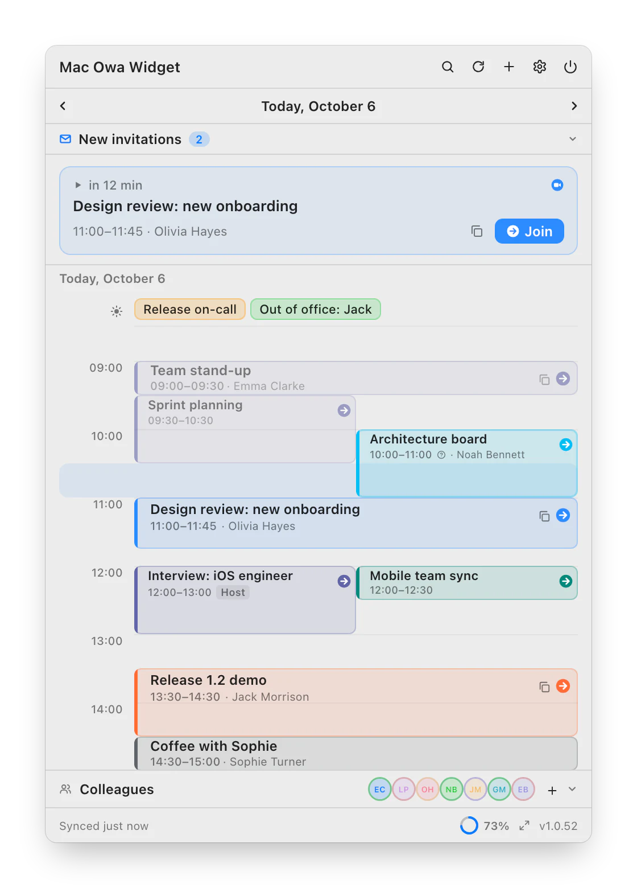
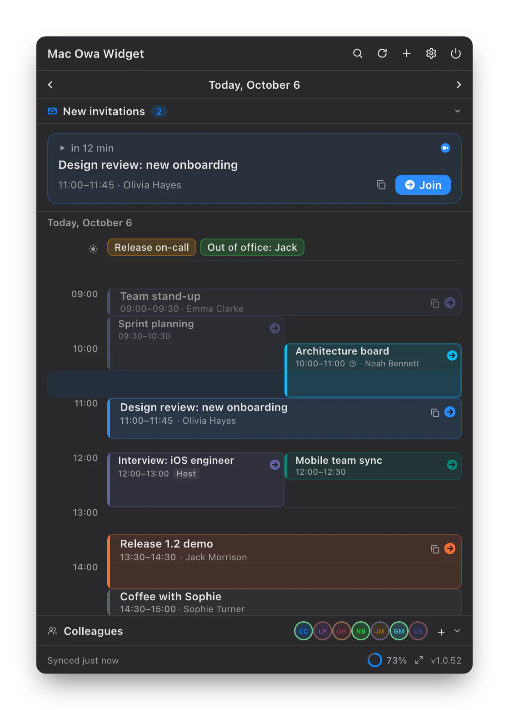
The call is in two minutes. No digging for the link.
The app finds the Teams, Zoom, Webex, Google Meet or KTalk link on its own — in the online meeting field, the location or the description. All that's left is to click.
- Smart menu bar status: time until the meeting, and until it ends
- A reminder with a Join button on the display where your cursor is
- Ctrl+Option+J joins from any app
- Moved or cancelled meetings show up in a panel you can answer from
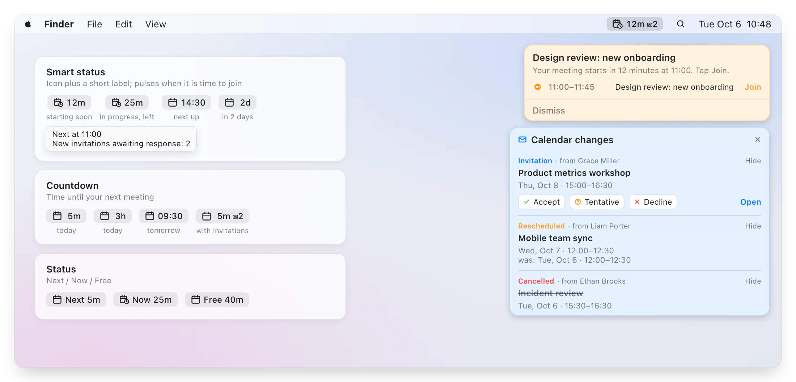
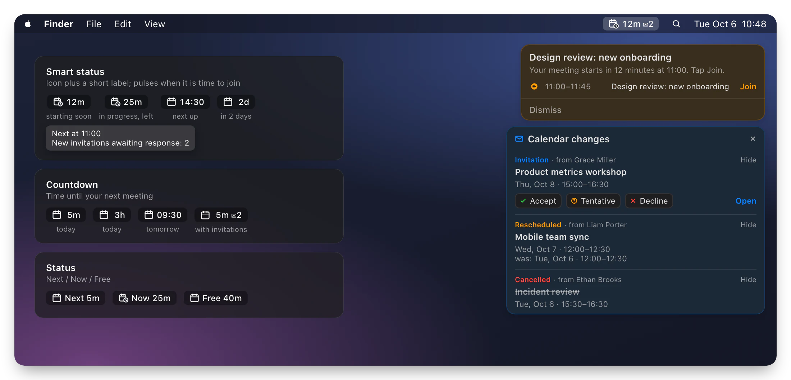
The whole agenda, not the first 255 characters.
The meeting card shows the description the way it was written: a timetable stays a table, lists stay lists, links are clickable. Participants and your RSVP live there too.
- Accept, tentative, decline — without opening Outlook
- Long participant lists collapse
- Copy the title, the link, or everything at once
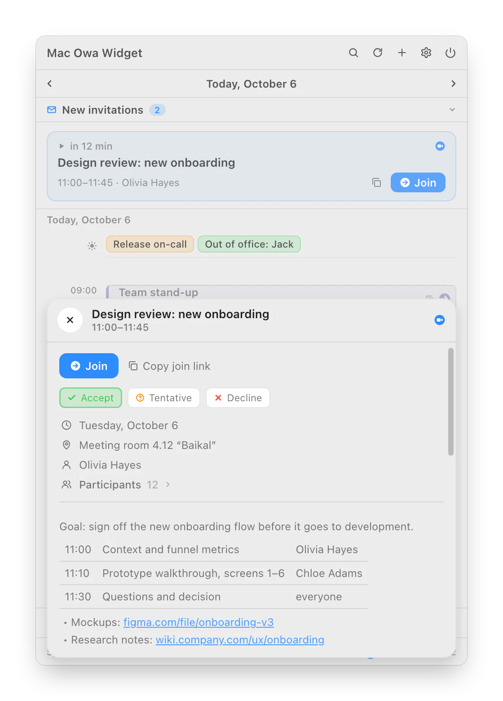
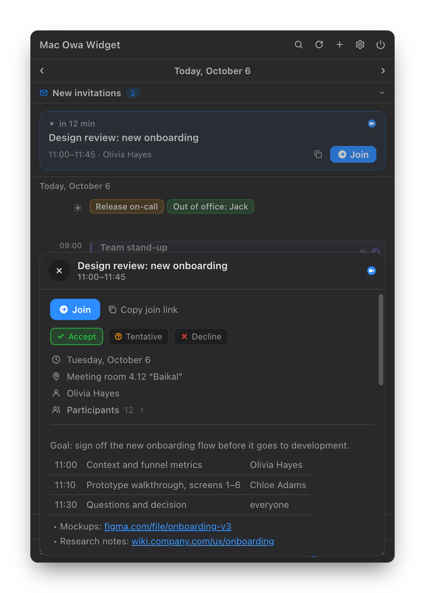
Find the hour when all five are free.
Add people from the Exchange address book and the grid shows everyone's week, while Best options suggests a good slot for each day. Pick a duration and only the windows the meeting fits into remain.
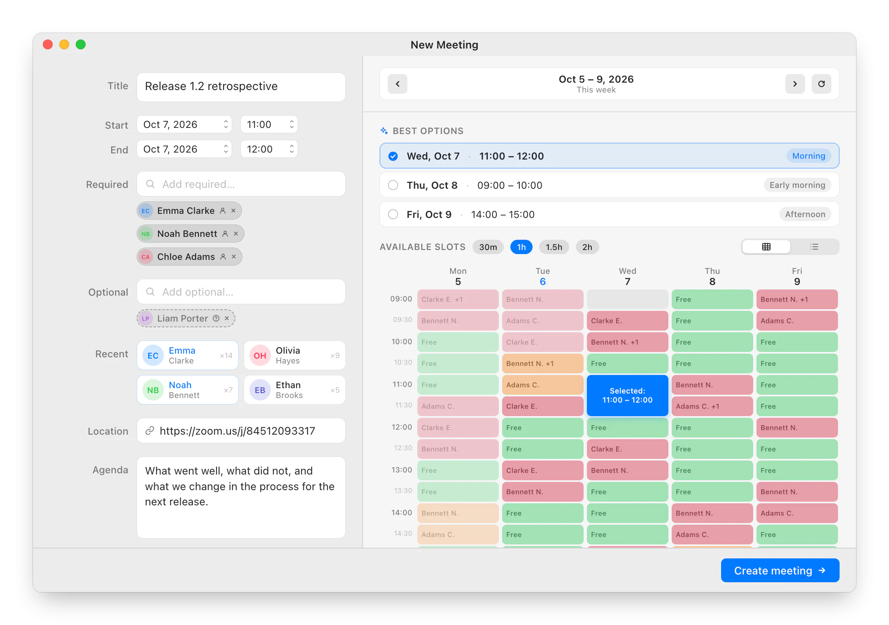
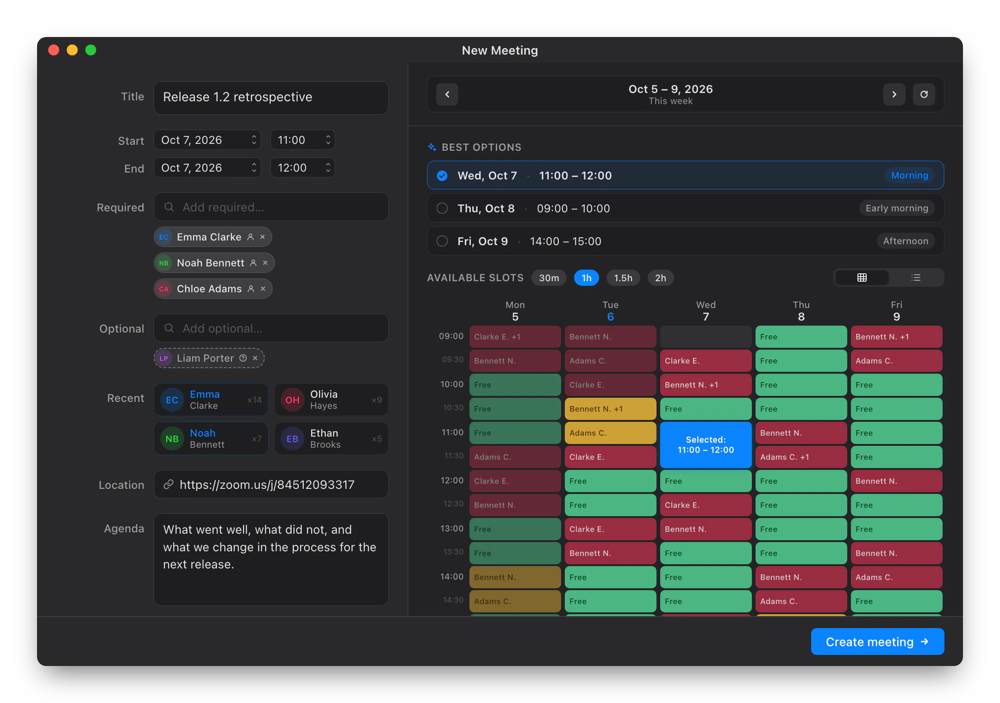
Where was that meeting about the budget?
Search by title, organizer, participants, location and description, a week back and a month ahead. And at the bottom of the window, the colleagues you call most: see who is free and jump into their Teams or Zoom room.
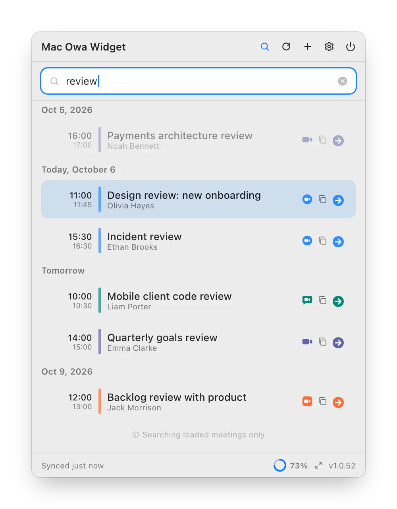
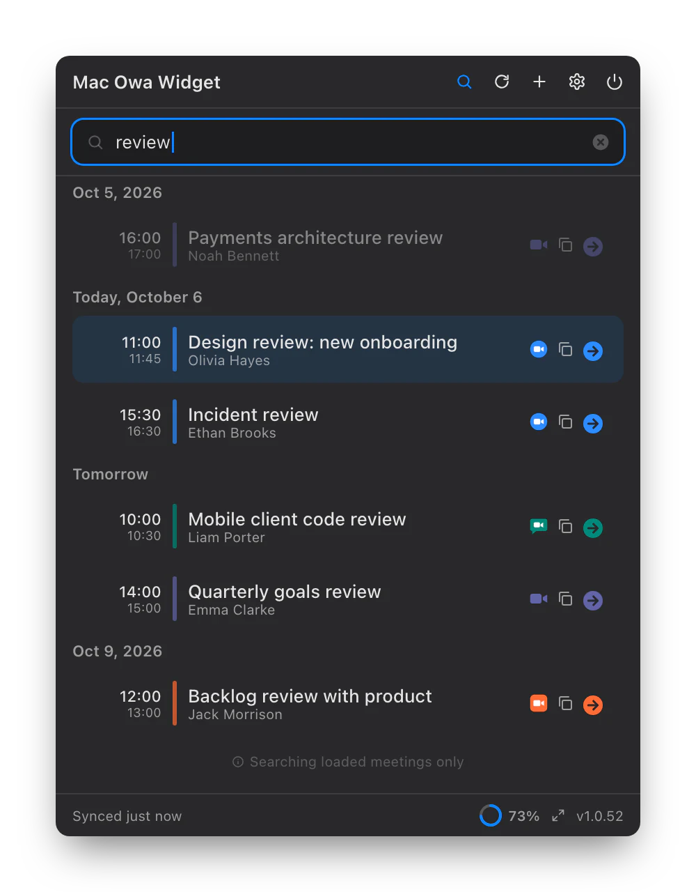
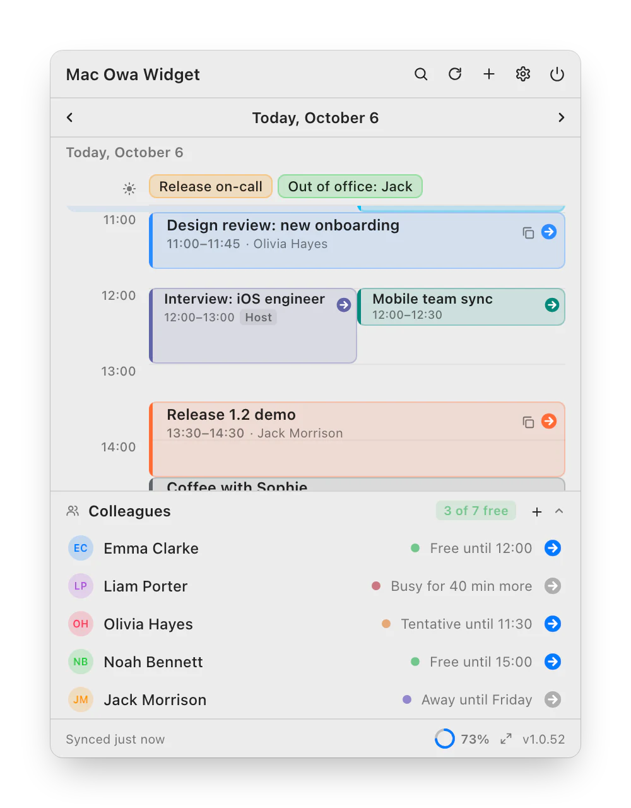
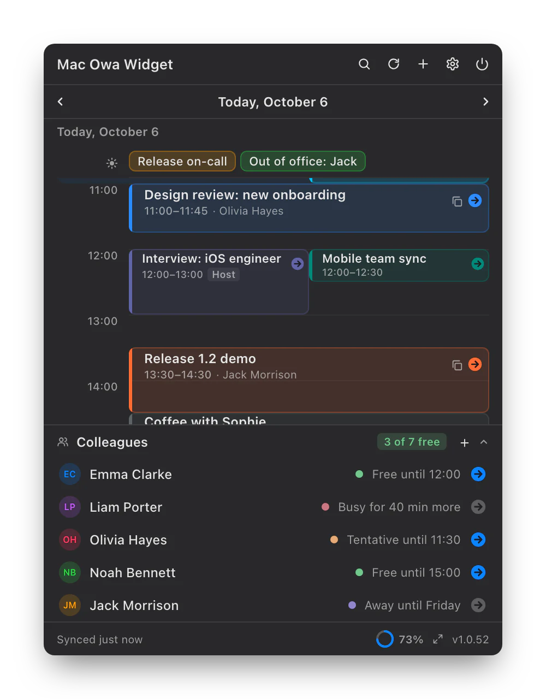
Work Exchange, personal Google, family iCloud.
Several Exchange / OWA servers, including ones behind Windows single sign-on, and any calendar your Mac already syncs. All on one timeline.
- macOS calendars are read-only; RSVP and new meetings go through OWA
- Theme, window size, time zone and language in Settings
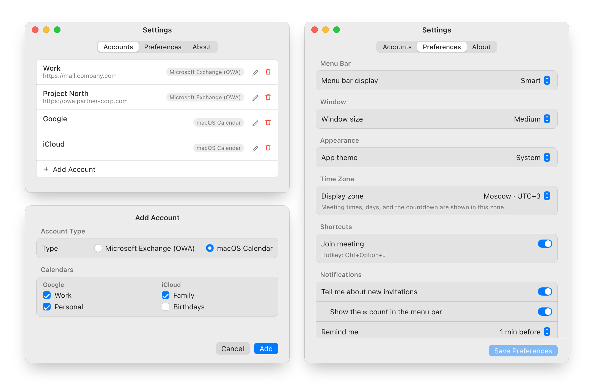
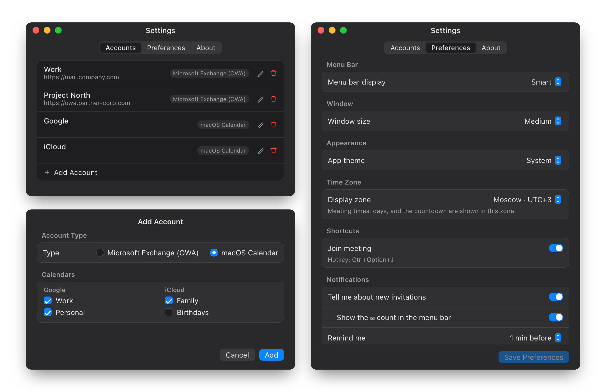
Your calendar stays yours.
Accounts, the meeting cache and attendee history are encrypted on disk.
Credentials go where you pointed them. A redirect elsewhere needs your confirmation.
A changed certificate shows the old and new fingerprints, so a renewal can be told from an intercept.
The diagnostic log stays on your Mac and holds no meeting titles, addresses or passwords.
Two minutes, once.
- Download the archive
The latest release on GitHub, the macOS
.zip. - Move it to Applications
Unzip and drag
OWAWidget.appto/Applications. - Launch and add an account
The icon appears in the menu bar. Settings → Accounts → “+”: Exchange (OWA) or macOS Calendar.
open /Applications/OWAWidget.app
- macOS
- 13 Ventura or later, Apple Silicon and Intel
- Calendar
- Exchange 2016, 2019, Online — and/or Google, iCloud via macOS
- Network
- Access to Exchange or a VPN; not needed for Mac calendars
Signed with an Apple Developer ID and notarized by Apple: macOS opens it like any other app. Sparkle installs updates with the Install button right in the app window.
Questions
Where do I find my OWA server address?
It's the address you open corporate webmail with, e.g. mail.company.com. If your company uses Windows single sign-on, enter the account as DOMAIN\login with your PC password.
Can I use it without Exchange?
Yes. Add a “macOS Calendar” account and the widget shows the calendars your Mac syncs: Google, iCloud, local. They are read-only: RSVP, new meetings and Colleagues need Exchange / OWA.
Why does macOS ask for Calendar access?
Only to read Google, iCloud and local calendars. If you use Exchange / OWA alone, you can decline it.
Do I need a VPN?
If Exchange is only reachable from the corporate network, yes: the app needs the same server your browser sees. Google and iCloud calendars don't need it.
Why is there no Join button?
The button appears when the online meeting field, location or description contains a call link. Check that the organizer added one.
Something is broken — what should I send?
Right-click the menu bar icon → “Copy diagnostics” and attach it to a GitHub issue. The log contains no meeting titles, addresses or passwords.